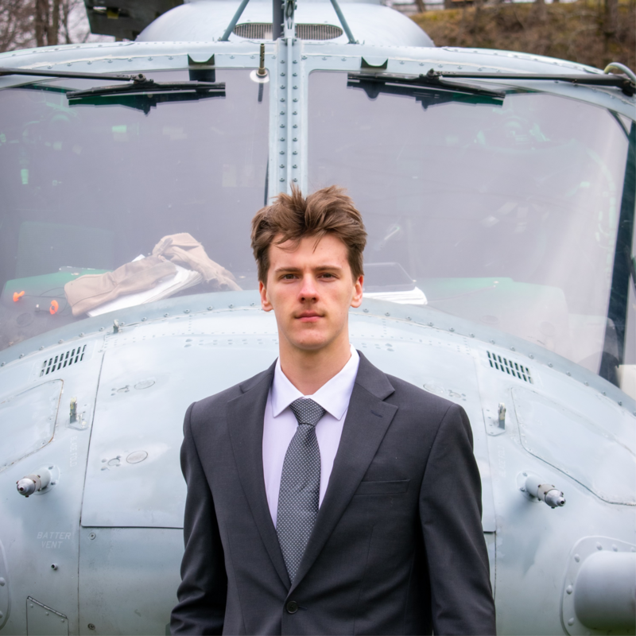

Engineering focus
David is interested in the full engineering loop: model the system, analyze its behavior, build the hardware, collect data, and improve the design. His work spans CAD, FEA, manufacturing, orbital modeling, sensors, and testing.
David Dyka studies Aerospace Engineering at Rensselaer Polytechnic Institute, where he focuses on aerospace structures, mechanical design, manufacturing, experimental systems, and hands-on prototyping.

David is interested in the full engineering loop: model the system, analyze its behavior, build the hardware, collect data, and improve the design. His work spans CAD, FEA, manufacturing, orbital modeling, sensors, and testing.
Rensselaer Polytechnic Institute, B.S. Aerospace Engineering, expected May 2027.
Manufacturing Engineering Intern at Atlas Copco, manufacturing and mechanical engineering internships with Polymathic Innovations, and undergraduate research in aerosol jet printing.
Student pilot working toward the FAA Private Pilot Knowledge Test, with six hours of powered flight training and three hours of glider training.
Pi Kappa Phi Pledge Class President and Tech & Robotics Club President.
U.S. citizen eligible for a U.S. security clearance. Fluent in English and Polish.